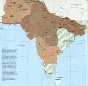
Mapa Indie
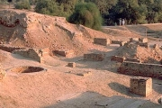
Vykopávky v Harappì
|
INDIE
V Evropì je Indie vnímána pøedevším jako zemì pøekypující duchovnem. Uèení guruové pøedávají tisíciletou moudrost svım uèedníkùm, vyuèují meditaci a józe, recitují matru óm. Indie je ale tak obrovská zemì, �e o ní mù�eme prohlásit prakticky cokoliv. Stala se kolébkou nìkolika svìtovıch nábo�enství (buddhismus, hinduismus, d�inismus) a vznikla zde øada vynikajících literárních dìl, nad jejich� rozsahem zùstává rozum stát. Indická kultura se mù�e pyšnit nepøerušenou tradicí, která trvá více ne� tøi tisíce let. Mù�eme se tu setkat s vıdobytky nejmodernìjší techniky, ale lidé stále ctí starobylé tradice. Nìkteré z nich mù�e Evropan tì�ko pochopit (�enich se s nevìstou vidí poprvé a� na svatbì, po ulicích se potulují posvátné krávy, kastovní systém), jiné lidé na Západì s nadšením pøijímají (vegetariánství, hledání duchovních hodnot). Zále�í pouze na nás, co si z indické kultury odneseme.
|
Historie
Nejstarší civilizace (3000-1500 pø.n.l.) na tomto území vznikla v povodí Indu. Jejími centry byla mìsta Harappa a Mohend�odaro. Árjové vtrhli do Indie kolem roku 1500 pø.n.l. a osídlili oblast kolem øeky Gangy. V 7. a� 4. stol. pø.n.l. zde vzniklo 16 samostatnıch státù, z nich� dosáhla nejvìtšího vlivu Magadhská øíše. Tu vystøídala Maurijská øíše (324-185 pø.n.l.) a Guptovská øíše (320-414 n.l.). Ve 14. stol. dobyli Indii muslimští Turci z Afghánistánu. Posledním velkım útvarem byla Mughalská øíše (1526-1750). V 18. stol. se dostává Indie pod nadvládu Anglièanù a roku 1858 se stává britskou korunní kolonií. V roce 1947 z ní vznikly samostatné státy Indie (hinduisté) a Pákistán (muslimové).
|
Védy
Nejstarší texty, které vytvoøili Árjové, souvisejí pøedevším s jejich nábo�enstvím. Jsou to védy (12. a� 9. stol. pø.n.l.), bráhmany (8. a� 7. stol. pø.n.l.), áranjaky a upanišady (6. a� 5. stol. pø.n.l.).
* Nìkdy se slovo véda pou�ívá v mu�ském rodì, nemluví se tedy o védì, ale o védu (Rgvéd).
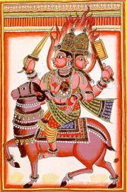
|
Védské texty
Nejdùle�itìjšími nábo�enskımi texty Indù byly védy (toto slovo by se dalo pøelo�it jako vìda nebo vìdìní). Celkem byly ètyøi – Rgvéda, Sámavéda, Jad�urvéda a Atharvavéda. Šlo o velmi rozsáhlé soubory modliteb a hymnù na jednotlivá bo�stva, které recitovali knì�í (bráhmani) bìhem bohoslu�eb. Nejstarší z nich je Rgvéda, sbírka 1028 básní, ve kterıch vystupují bohové jako Indra (hromovládce), Agni (bùh ohnì), Sóma (bùh stejnojmenného opojného nápoje a Mìsíce) a další. Sámavéda je souborem védskıch melodií a vìtšina básní do ní zahrnutıch se shoduje s pøedchozí védou. Jad�urvéda obsahuje kromì básní také obìtnické formule (mantry) pøevzaté pøedevším z Rgvédy. Poslední Atharvavéda zahrnuje kouzelnická zaøíkadla a rùzné postupy z èerné magie.
|
Bráhmani
Abychom pochopili rozdìlení véd, musíme si vysvìtlit, jak vypadaly nábo�enské obøady. Vykonávali je v�dy ètyøi knì�í. První pronášel texty hymnù, další zpíval pøíslušnou melodii, tøetí mumlal mantry a provádìl pøedepsané úkony a poslední kontroloval správnost obìtního obøadu. Sebemenší chyba mohla pøinést neštìstí, pøípadnì i zánik celého svìta! Indové toti� vìøili, �e všichni bohové jsou na obìtech, tedy vlastnì na bráhmanech, zcela závislí.
Srovnej stvoøení svìta popsané v Bibli s touto ukázkou.
Co je jsoucno?
|
Bráhmany
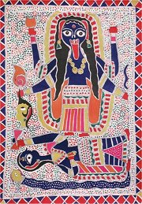
Krvelaèná bohynì Kálí vy�adovala obìtování �ivıch tvorù, ojedinìle se v Indii provádìly i lidské obìti, anglická koloniální správa je ale zakázala.
Áranjaky a upanišady
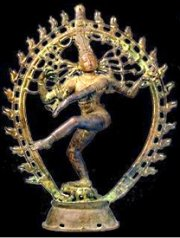
Úkolem boha Šivy je znièit v pravı èas svìt svım tancem, zároveò jde o boha meditace a jogínù.
|
Bráhmany jsou prozaické texty, ve kterıch se vysvìtluje vıznam jednotlivıch véd a nábo�enskıch obøadù vèetnì dùkladného popisu, jak tyto obøady provádìt. Dìlí se do ètyø skupin podle pøíslušnıch véd. Nejvıznamnìjší z nich je Šatapathabráhmana (Bráhmana o stovce cest), která obsahuje øadu zajímavıch podobenství.
Áranjaky (lesní texty) mohli uèitelé svım �ákùm sdìlovat pouze ve skrytu lesních samot. Jejich mystické vıklady jsou èasto nesrozumitelné a na rozdíl od pozdìjších upanišad netvoøí jejich uèení jednotnı systém. Upanišady (pøisednutí) jsou dùvìrná sdìlení, která pøedával uèitel �ákovi mezi ètyøma oèima. Jde vlastnì o filozofické texty, které se zabıvají problematikou lidské existence, svìta i �ivota. Upanišady se èásteènì odklánìjí od obìtí a bohù. Jejich autoøi dospìli k názoru, �e základem všeho je vesmírnı princip brahma, jeho� souèástí je i lidská duše átman. Èlovìk by se mìl soustøedit pøedevším na pochopení jednoty veškerıch vìcí i dìjù a na splynutí vlastní duše s tímto abstraktním principem. K tomu mù�e pou�ívat rùzné duchovní techniky, napø. jógu, askezi (odøíkání), meditaci atd. Upanišady u� obsahují základní myšlenky, na kterıch je postaven pozdìjší hinduismus. Je to pøedevším víra v kolobìh �ivota (sansára) a v pøevtìlování duší (karma).
|
Kastovní systém
Árjové, tj. Urození nebo Vznešení, se nechtìli smísit s pùvodním obyvatelstvem, a proto zakázali vzájemné sòatky. Pùvodní obyvatele (øíkali jim èandálové neboli nedotknutelní, proto�e je mohl ka�dı bráhman beztrestnì zabít, pokud se ho pouze dotkli) pova�ovali za neèisté, upírali jim základní práva a nutili je vykonávat nejhorší zamìstnání (obstarávání mrtvıch). Sami Árjové tvoøili ètyøi spoleèenské skupiny neboli varny (barvy). Nejvıše stáli bráhmani (knì�í a vzdìlanci), o stupeò ní�e byli kšatrijové (panovníci a bojovníci), dále vaišjové (obchodníci, øemeslníci a rolníci) a na posledním místì byli šúdrové (neplnoprávní sluhové). Toto nerovné rozdìlení spoleènosti dále prohloubil kastovní systém. Kastu charakterizuje pøedevším urèité zamìstnání (dnes existují v Indii tisíce kast, napø. øezníci) a zákaz sòatku mezi pøíslušníky kast jiného stupnì. Kastovní pøíslušnost získá èlovìk narozením a je do�ivotní. Spoleèenské styky mezi jednotlivımi kastami jsou mizivé.
Zamysli se nad tím, co má spoleèného kastovní systém s nacistickou ideologií.
Jak rozumíš této ukázce z upanišady?
Co víš o józe a meditaci?
Vìøíš na reinkarnaci?
Kterım zvíøetem chceš bıt v pøíštím �ivotì? Proè?
Napiš �ivotopis èlovìka, kterı prošel v minulıch �ivotech nejrùznìjšími podobami.
|
Gautama Buddha
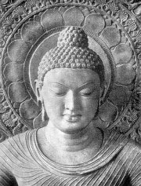
Buddhismus se záhy rozdìlil na dva proudy. Pùvodní théraváda neboli hínajána (malı vùz) umo�òovala dosa�ení nirvány pouze mnichùm, v mahájánì (velkı vùz) se mohou stát Buddhou všichni. Cílem druhého smìru je pøivést k buddhismu co nejvíce stoupencù. Nejvìtším vzorem jsou tzv. bódhisattvové, kteøí dosáhli nirvány, ale dobrovolnì se jí vzdali, aby mohli šíøit Buddhovo uèení mezi obyèejnımi lidmi. Mahájána se stala nábo�enstvím v pravém slova smyslu, proto�e ji doprovází bohatá mytologie. Nejdùle�itìjším textem tohoto proudu je Lotosová sútra. Hínajána byla brzy z Indie vytlaèena na Srí Lanku a prosadila se v Barmì, Thajsku, Kambod�i a Laosu. Mahájána se rozšíøila do Nepálu, Tibetu, Èíny, Korey a Japonska.
Mù�eme pova�ovat buddhismus za nábo�enství? Pokus se najít argumenty pro i proti.
Jakı je tvùj názor na citované myšlenky z Dhammapady?
|
Buddhismus
Gautama Buddha (563-486 pø.n.l.) se narodil jako princ Siddhártha a vše nasvìdèovalo tomu, �e pro�ije bezstarostnı �ivot v pøepychu. Jeho otec se ho dokonce sna�il uchránit pohledu na sebemenší utrpení, a proto mu nedovolil opustit královskı palác. Princ ho ale neposlechl a na svıch vıpravách spatøil poprvé na vlastní oèi starce, nemocného a mrtvého. Setkal se také s asketou a rozhodl se ho následovat. Opustil man�elku i syna, vzdal se bohatství i trùnu a zaèal �ít jako poustevník. Po mnoha letech hledání správné cesty dosáhl osvícení a stal se Buddhou (Probuzenım).
Základem jeho uèení je poznání ètyø vznešenıch pravd:
1) Na tomto svìtì nás èeká pouze utrpení (narození, nemoc, stárnutí, smrt, odlouèení od milované bytosti, nedosa�ení �ádaného…).
2) Pøíèinou utrpení jsou naše touhy a pøání.
3) S jejich odstranìním zmizí i utrpení.
4) K odstranìní utrpení vede osmidílná cesta správného názoru, rozhodnutí, øeèi, jednání, zpùsobu �ivota, sna�ení, uva�ování a duševního soustøedìní.
Pokud èlovìk tyto pravdy naplní svım �ivotem, vysvobodí se z kolobìhu novıch zrození a dosáhne nirvány (bla�enosti, vyvanutí).
Tøi koše
Sám Buddha své uèení nezapsal, a� do 1. stol. pø.n.l. se pøedávalo ústní tradicí mezi mnichy. Ti se nìkolikrát sešli, aby se shodli na závazném znìní jeho myšlenek a dali øád novému nábo�enství. Tento text nazıváme Tøi koše (Tipitaka) nebo pálijskı kánon, podle jazyka páli, ve kterém byl slo�en. Tvoøí ho Koš øádové disciplíny (pravidla pro �ivot buddhistickıch mnichù), Koš pouèek (vlastní Buddhovo uèení) a Koš víry (ménì vıznamnı dodatek pøipojenı a� na buddhistickém koncilu, kterı svolal Ašóka). Nejzajímavìjšími texty z tohoto velmi rozsáhlého díla jsou Dhammapada – pøekládá se jako Cesta nauky nebo Slova víry (Buddhovy vıroky o pøátelství, zlu, trestu atd.) a d�átaky (bajky, pohádky a mravouèné pøíbìhy, které vyprávìjí o minulıch �ivotech Buddhy).
Dhammapada
160. Èlovìk je pánem sám sobì; kdo jinı by mu pánem mìl bıt? Opanuješ-li sám sebe, máš pána, jej� bys jinak tì�ko získal.
5. Nenávist nelze nikdy pøemoci nenávistí. Jen láska pøemù�e nenávist, to je zákon odvìkı.
50. Pochybení ostatních si nevšímej, ani co a jak dìlají; své vlastní jednání sleduj, cos udìlal a cos pochybil.
279. Kdo pozná, �e vše, co vzniklo, není skuteèné, toho se hoøe netkne. To� cesta k oèistì.
|
|
Ašóka
Buddha neuznával vısadní postavení bráhmanù, modlitby k bohùm ani obìti. Jeho uèení bylo urèeno ka�dému èlovìku bez ohledu na pøíslušnost k nìkteré kastì, a proto se velmi rychle rozšíøilo po celé Indii. Velkou zásluhu na tom mìl i král Ašóka (272-232 pø.n.l.), kterı se k buddhismu pøihlásil a zaèal po celé zemi vztyèovat sloupy s prvními nápisy, které obsahovaly hlavní myšlenky Buddhova uèení (napø. Jen pravda vítìzí). Nechal také vybudovat stúpu v Sánèí a svolal koncil, na kterém byla sestavena definitivní verze buddhistického kánonu, tzv. Tøi koše (Tipitaka).
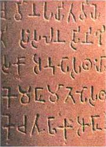
Ašókùv nápis v písmu brahmí
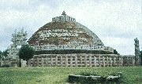
Buddhistická stúpa v Sánèí. Stúpy jsou vlastnì schránky na Buddhovy ostatky. Mají podobu pøevrácené misky.
|
Hinduismus
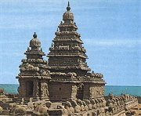
Indickı chrám v Mahábalipuramu
|
Hinduismus
Hinduismus navázal na tradièní indické nábo�enství. Zásadním impulzem k jeho vzniku bylo masivní rozšíøení buddhismu, co� se nelíbilo hlavnì bráhmanùm, kteøí pøicházeli o vısadní postavení. Hinduismus nabízel lidem kromì tradice obìtí také bohatou mytologii (purány) a velká vypravování (eposy Mahábhárata a Rámájana). Díky tomu získali brzy bráhmani svùj pøedchozí vliv a buddhismus byl vytlaèen na okraj zájmu. Hinduistickıch bo�stev a pøíbìhù o nich je bezpoèet. Nejvıznamnìjší z nich je trojice Brahma (stvoøitel), Višnu (udr�ovatel) a Šiva (nièitel svìta).
|
Purány
Purány jsou sbírky hinduistickıch mıtù.
|
Mahábhárata
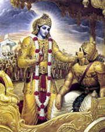
Kršna promlouvá k Ard�unovi. Podle purán sestoupil bùh Višnu na zem nìkolikrát v rùznıch podobách (avatárech), napø. jako �elva, trpaslík, ryba nebo právì Kršna a také Ráma.
|
Mahábhárata (400 pø.n.l. a� 400 n.l.)
Indickı národní epos Mahábhárata (Velkı boj Bharatovcù) vznikal øadu staletí a obsahuje 200 tisíc veršù. Toto dílo je tak rozsáhlé, �e v úplnosti zøejmì nebude nikdy pøelo�eno do èeštiny. Dìj je navíc tak slo�itı, �e ho lze pøevyprávìt jen s obtí�emi. Základem je konflikt mezi dvìma spøíznìnımi rody – Kuruovci a Pánduovci. Pánduovci prohrají svou èást království v kostkách a musejí odejít do vyhnanství. Kdy� doba vyhnanství pomine, chtìjí zpátky svùj majetek, ale jejich bratranci jim ho odmítnou vydat. Støetnou se s nimi tedy ve velkém boji, kde se na stranu obou skupin postaví všichni králové Indie, démoni i bohové. Pánduovci nakonec všechny Kuruovce pozabíjejí.
Bhagavadgíta
Souèástí eposu Mahábhárata je Bhagavadgíta (Zpìv Vznešeného), co� je báseò o smyslu �ivota, která zachycuje rozmluvu mezi vozatajem Kršnou (vtìlení boha Višnua) a bojovníkem Ard�unou. Pøed zaèátkem velkého støetu Pánduovcù a Kuruovcù Ard�uná váhá, jestli se má pustit do bratrovra�edného boje. Kršna mu vylo�í, �e jako kšatrija (bojovník) se musí dr�et své dharmy, ale pokud všechny své èiny odevzdá jemu, nezneèistí se jeho duše jejich plody a vymaní se z vìèného kolobìhu pøevtìlení. Toto uèení se stalo jedním z hlavních proudù hinduismu, kterı po vìøících �ádá pøedevším oddanou lásku ke Kršnovi.
|
Co je zde, to je všude, a co zde není, není ani nikde jinde.
|
|
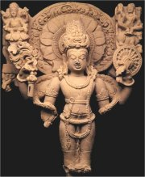
Bùh Višnu udr�uje tento svìt.
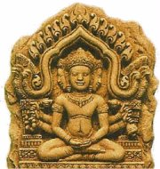
Bùh Brahma svìt stvoøil.
|
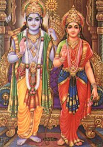
Ráma a Síta
|
Válmíki: Rámájana (400 pø.n.l. a� 200 n.l.)
Za autora eposu Rámájana je pova�ován svìtec Válmiki, dílo však bylo dále doplòováno. Rámájana je mnohem ucelenìjší ne� Mahábhárata a je také ètyøikrát kratší (48 tisíc veršù). Vypráví o lásce prince Rámy a jeho man�elky Síty, kterou unesl zlı démon Rávana na ostrov Lanku. Ráma sebere vojsko a spoleènì s opièím králem Hanumanem démona porazí a svou man�elku vysvobodí. Jeliko� má Ráma pochybnosti, zda mu zùstala po celou dobu vìrná, musí projít Síta zkouškou ohnìm.
|
Válmíki
Válmíki je pova�ován za prvního indického básníka a jeho epos Rámájana za nejstarší báseò. Je toti� psána daleko poetiètìjším jazykem ne� Mahábhárata.
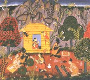
Ráma a Síta
O èem vypráví tato ukázka z Rámájany?
|
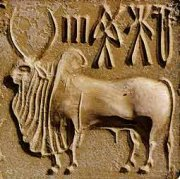
Peèe� z Mohend�odara s nejstarším indickım písmem.
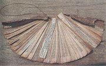
Kniha z palmovıch listù
|
Jazyk a písmo
Nejstaršími doklady indického písma jsou peèetidla z Mohend�odara, která obsahují kratièké, dosud nerozluštìné nápisy v neznámem jazyce. Árjové mluvili indoevropskım jazykem, jeho� nejstarší podobu nazıváme védskı nebo mantrovı dialekt. V 5. stol. pø.n.l. sepsal bráhman Pánini první gramatickou pøíruèku na svìtì, která popisuje pravidla sanskrtu. Tento dnes u� mrtvı jazyk byl pova�ován za bo�skı vıtvor, a proto se stal jazykem nábo�enskıch, umìleckıch i vìdeckıch dìl. Obyèejní lidé ale mluvili v prákrtech (rùzná náøeèí, kterıch jsou dnes v Indii stovky).
Indové své texty dlouho nezapisovali, proto�e více vìøili vlastní pamìti. Bráhmani se uèili veškeré texty zpamìti, co� je vzhledem k délce ústního tradování (skoro tisíc let) a k rozsahu indické literatury (Mahábhárata má 200 000 veršù, Rgvéda 1028 básní) neuvìøitelné. Nejprve zaèali pou�ívat písmo buddhisté, kteøí pro své texty nepou�ívali archaickı sanskrt, ale srozumitelnìjší jazyk páli. Toto písmo bylo velmi jednoduché. Nazıvá se brahmí a najdeme ho pøedevším na sloupech krále Ašóky (272-232 pø.n.l.). Z tohoto písma se vyvinula øada dalších systémù pou�ívanıch v celé ji�ní Asii, pøedevším písmo dévanágarí (bo�ské písmo), které se pou�ívalo k zapisování sanskrtskıch textù a pøevzala ho i moderní hindština.
|
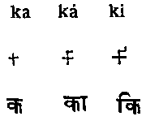
Ukázka indického systému slabik. V prvním øádku je vıslovnost, ve druhém zápis v písmu brahmí a na posledním je písmo dévanágarí.
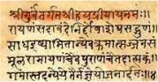
List z indické knihy
|
Vátsjájana: Kámasútra
Nejznámìjší indickou uèebnicí je Vátsjájanova Kámasútra, která zøejmì vznikla v 3. a� 5. stol. n.l. Kromì rad psanıch prózou obsahuje i poetické pasá�e ve verších.
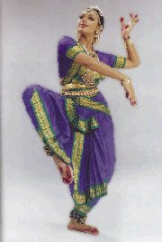
Indická taneènice
|
Uèebnice
Základem vıkladu v indickıch uèebnicích byly sútry (vlákna). Šlo o hutné pouèky, které se museli �áci nauèit nazpamì�. Ka�dá sútra musela bıt doplnìna uèitelovım komentáøem, proto�e jinak by byla zcela nesrozumitelná. Uèebnice neboli šástry dìlíme do tøí okruhù. Dharmašástry se zabıvaly dharmou (duchovním �ivotem) – šlo o souhrn povinností ka�dého èlovìka, kterı se liší podle vìku, pohlaví nebo kastovní pøíslušnosti, na nìm� se zakládalo zvykové právo. Arthašástry se zamìøovaly na praktickı �ivot nebo rady panovníkùm, jak vládnut, a kámašástry byly vìnovány milostnému �ivotu.
Další díla
Paòèatantra (bajky)
Sómadéva: Oceán pøíbìhù
|
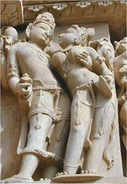
Vátsjájana byl mnich, ale evropské pøedstavy o mnišství byly zcela opaèné. Køes�anské øehole jsou zalo�ené na odøíkání, ne na psaní uèebnic lásky. O tom, �e indická kultura je od evropské znaènì odlišná, svìdèí chrámové komplexy v Khad�uráhu, které jsou plné erotickıch vıjevù.
Jak si lidé projevují náklonnost dnes?
|
Internetové stránky
Umìní Indie
Dìjiny Indie
Indie
Buddhismus, internetovı rozcestník
Buddhismus
Angkor, buddhistickı komplex (Kambod�a)
Languages and sripts od India
Harappa
Hindunet, rozcestník
Indologickı ústav FF UK
Exkurze
Hare Kršna, nábo�enská sekta pùsobící v Èechách a spravující sí� indickıch jídelen Góvinda
Tipy
DharmaGaia, nakladatelství zamìøené na orientální literaturu
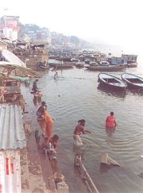
Rituální oèista v posvátné Ganze
|
Doporuèená èetba
Amaru a Bhartrhari: Sloky o lásce, moudrosti a odøíkání, pøel. O.Friš, Praha 1959
Bhagavadgíta (èást Mahábháraty), pøel. J.Filipskı a J.Vacek, Praha 1976
Bohové s lotosovıma oèima, Praha 1986
Bondy, E.: Indická filozofie, Praha 1991
Dhammapadam, Cesta k pravdì, pøel. K.Werner, Praha 1992
D�átaky, Pøíbìhy z minulıch �ivotù Buddhy, pøel. D.Zbavitel, Praha 1992
Filipskı, Vacek: Ašóka, Praha 1971
Fišer, Zbynìk: Buddha, Odeon, Praha 1968
Hesse, Hermann: Siddhárta (román)
Johnson, Gordon: Svìt Indie, pøel. D. Zbavitel, J.Vacek, Kni�ní klub, Praha 1998
Krása, Marková, Zbavitel: Indie a Indové, Od dávnovìku k dnešku, Vyšehrad, Praha 1997
Lesnı, V.: Buddhismus, Praha 1948,
Mahábhárata aneb Velkı boj, pøevyprávìl V.Miltner, Praha 1988
Miltner, V.: Indie má jméno Bhárat, Praha 1978
Miltner, V.: Pøíbìhy bájné Indie, Praha 1973
O stateèném Rámovi a vìrné Sítì, H.Preinhaelterová (místo D.Zbavitele) Praha 1975
Paòèatantram, Patero nauènıch oddílù, pøel. F.Jílek, Praha 1968
Pertold, O.: D�inismus, Praha 1966
Preinhaelterová, H.: Hinduista od zrození do zrození, Praha 1997
Rámájana, pøevyprávìl O.Friš, Praha 1957
Sómadéva: Oceán pøíbìhù, pøel. D.Zbavitel, Praha 1981
Upanišady, pøel. P.Kadula, Praha 1990
Vátsjájana Mnich: Kámasútra, pøel. V.Miltner, Praha 1969
Védské hymny, pøel. O.Friš, Praha 1995
Wanguová, M.B.: Buddhismus, pøel. V.Miltner, NLN, Praha 1996
Zbavitel, D. a kol.: Bozi, bráhmani, lidé, Ètyøi tisíciletí hinduismu, Nakladatelství Èeskoslovenské akademie vìd, Praha 1964
Zbavitel, Vacek: Prùvodce dìjinami staroindické literatury, ArchaJimFa, Tøebíè 1996
Zbavitel, D.: Rabíndranáth Thákur, Praha 1961
Zbavitel, D.: Starovìká Indie, Praha 1985
|
Pøiprav si referát o nìkteré z uvedenıch knih nebo internetovıch stránek.
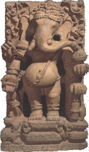
Indickı bùh štìstí Ganéša
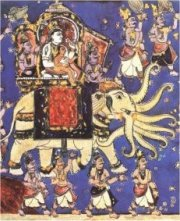
Bùh Indra byl vládcem hromù a bleskù.
|
|